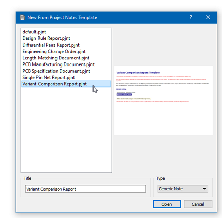
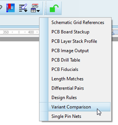
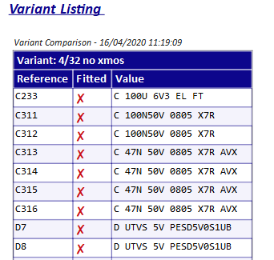
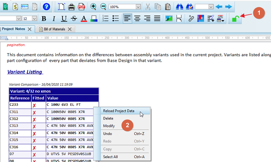

When you have multiple variants of a project it's often useful to list the differences between the variant and the base design. The variant comparison report does precisely that and can be launched from the Project Notes module.
If you are starting the Project Notes module you can select it from the list of available templates

Creating a Variant Comparison Report from Project Notes
If you already have a report open in Project Notes you can select New Note from the File menu and then select from the template list. If you want to add the information to a custom report you'll find it available in the Project Data menu for manual insertion.

Adding the Variant Comparison table to a custom report.
The table itself is very simple and, for each variant in the design, lists components that are different from the base design. The difference could be a not fitted status or it may be an alternative value part.

Example variant report showing not fitted parts in one design variant.
Reports are time stamped at the top and are static unless manually reloaded via the right click context menu. First, check that the project note is unlocked and then reload the data from the right click context menu on the data table.

Reloading the data in the variant table.